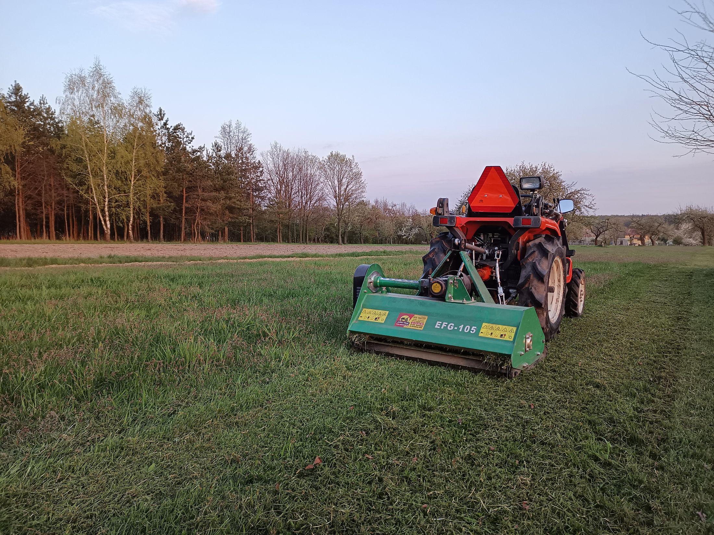

Pajęczno
Tu mamy bazę i sprzęt, więc w Pajęcznie jesteśmy najszybciej. Kosimy działki i łąki, przycinamy żywopłoty i drzewa przy domach, pielęgnujemy ogrody, a zimą odśnieżamy podjazdy i place. Obejrzenie terenu i wycena na miejscu nic nie kosztują.

Baza jest w Pajęcznie, przy Cmentarnej 46. Dojeżdżamy do 40 km, a do 10 km wycena i dojazd są bezpłatne.
Proszę wpisać nazwę, kliknąć jedną z miejscowości albo dowolne miejsce na mapie. Od razu widać odległość od bazy i warunki dojazdu.
Proszę wybrać miejscowość albo kliknąć dowolne miejsce na mapie. Pokażemy odległość od naszej bazy i warunki dojazdu.
Odległość liczona w linii prostej od bazy w Pajęcznie. Drogą wychodzi zwykle trochę więcej, a dokładne warunki ustalamy przez telefon.
W tych miejscach bywamy najczęściej. Pracujemy tam przy koszeniu, wycinkach, ogrodach i porządkach na działkach.
Tu mamy bazę i sprzęt, więc w Pajęcznie jesteśmy najszybciej. Kosimy działki i łąki, przycinamy żywopłoty i drzewa przy domach, pielęgnujemy ogrody, a zimą odśnieżamy podjazdy i place. Obejrzenie terenu i wycena na miejscu nic nie kosztują.
Trębaczew leży w naszej bezpłatnej strefie. Kosimy tu łąki i zarośnięte działki, wycinamy i przycinamy drzewa, a gałęzie rozdrabniamy rębakiem na miejscu. Dojazd i wycena są bez opłat.
W Działoszynie i okolicy robimy koszenie, wycinki przy domach, przycinkę żywopłotów i czyszczenie działek pod budowę. Koszt dojazdu mówimy od razu przy pierwszym telefonie, żeby nie było niespodzianek.
Raciszyn to nasza częsta trasa, zaraz za Działoszynem. Porządkujemy działki, kosimy wysoką trawę kosiarką bijakową, przycinamy drzewa i sady. Dojazd ustalamy przez telefon przed przyjazdem.
W Sulmierzycach i okolicznych wsiach kosimy łąki i nieużytki, wycinamy drzewa i przygotowujemy działki pod budowę. Przy stałej obsłudze terenu przyjeżdżamy regularnie przez cały sezon.
Przy dużym terenie jedziemy dalej. Nasze największe zlecenie to 5 hektarów wycinki przy MOP Woźniki na autostradzie A1, zrobione w dwa dni. Duży teren poza mapą? Wystarczy zadzwonić, ustalimy.
Odległość w linii prostej od bazy w Pajęcznie.
Do 10 km od Pajęczna przyjeżdżamy obejrzeć teren i wyceniamy bez opłat. Dalej, do 40 km, też dojeżdżamy, a koszt dojazdu mówimy od razu przez telefon.